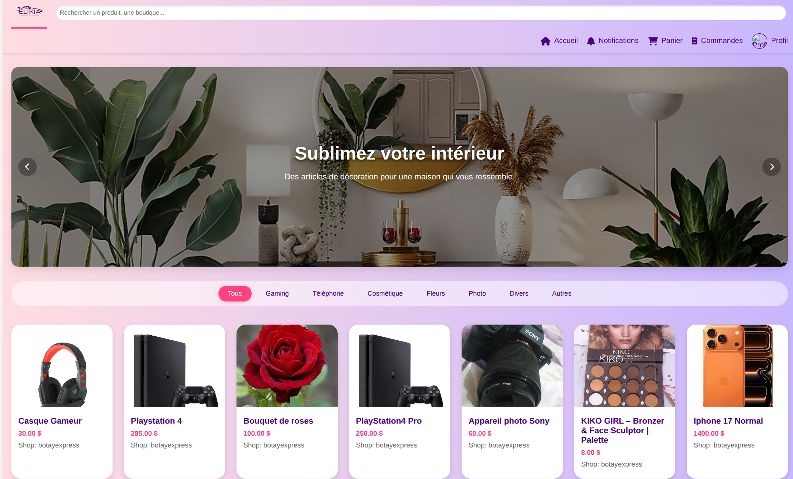
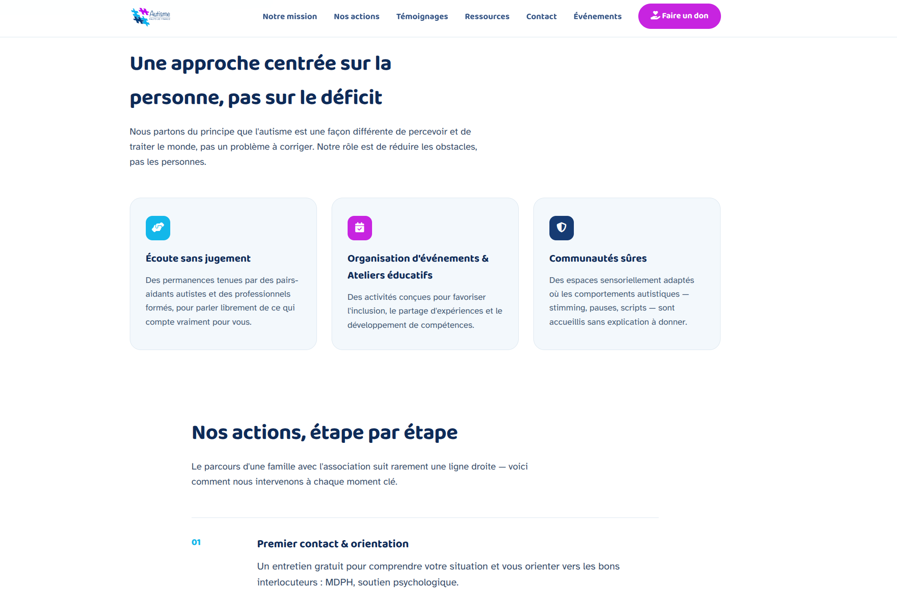
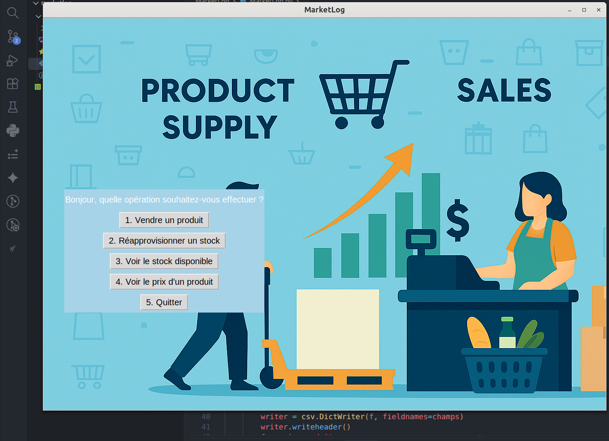

Compétences
Soft skills
- Je résous des problèmes
- Je travaille en équipe
- Je communique avec clarté
- Je m’adapte
- Je travaille en autonomie
- Je reste curieux techniquement
Centres d’intérêt
- J’aime la musique
- Je pratique le basket-ball
- Je m’intéresse aux voitures
Projets

Elikya - Marketplace e-commerce
E-quiz

Autisme HDF

MarketLog
Jeu du serpent en python
Portfolio Personnel
Bistrot Le Rétro
Projet - Chichats
Projet - Web_blog
Prototypage RFID
Lecteur d'empreinte digitale
Radar à ultrasons
Parcours & expériences
Je prépare un bachelor en développement web
Septembre 2026 - aujourd'hui · My Digital School, Lille, France
J’ai réalisé un stage chez Autisme Hauts-de-France
Stage en développement web · période à préciser · Autisme Hauts-de-France
Je me suis formé à l’administration système et au DevOps
Janvier 2026 - août 2026 · École IT, Valenciennes, France
J’ai effectué un stage en maintenance
Février 2025 – avril 2025 · Société Nationale des Chemins de Fer du Congo – Lubumbashi, RDC
J’ai obtenu mon baccalauréat en électronique industrielle
Septembre 2021 – juillet 2025 · Institut Technique Salama-Don Bosco, Lubumbashi, RDC
Contact
Je suis disponible pour un stage, une alternance ou une collaboration sur un projet. Écrivez-moi pour en discuter.